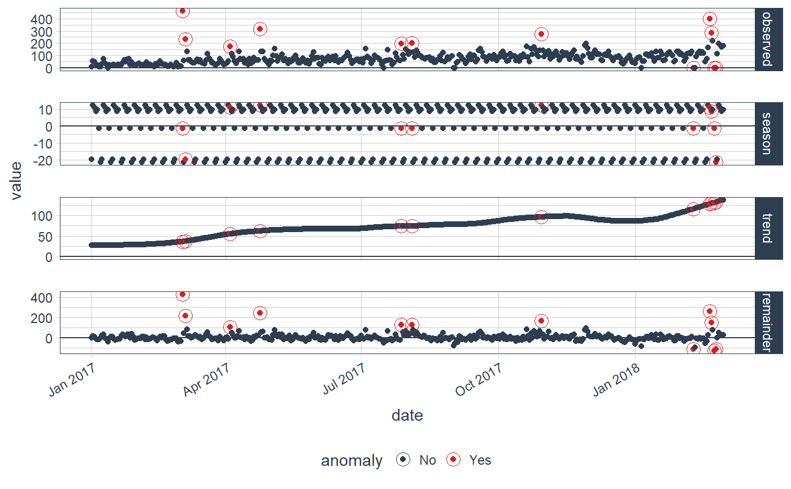

R/plot_anomaly_decomposition.R
plot_anomaly_decomposition.RdVisualize the time series decomposition with anomalies shown
plot_anomaly_decomposition( data, ncol = 1, color_no = "#2c3e50", color_yes = "#e31a1c", alpha_dots = 1, alpha_circles = 1, size_dots = 1.5, size_circles = 4, strip.position = "right" )
| data | A |
|---|---|
| ncol | Number of columns to display. Set to 1 for single column by default. |
| color_no | Color for non-anomalous data. |
| color_yes | Color for anomalous data. |
| alpha_dots | Controls the transparency of the dots. Reduce when too many dots on the screen. |
| alpha_circles | Controls the transparency of the circles that identify anomalies. |
| size_dots | Controls the size of the dots. |
| size_circles | Controls the size of the circles that identify anomalies. |
| strip.position | Controls the placement of the strip that identifies the time series decomposition components. |
Returns a ggplot object.
The first step in reviewing the anomaly detection process is to evaluate
a single times series to observe how the algorithm is selecting anomalies.
The plot_anomaly_decomposition() function is used to gain
an understanding as to whether or not the method is detecting anomalies correctly and
whether or not parameters such as decomposition method, anomalize method,
alpha, frequency, and so on should be adjusted.
library(dplyr) library(ggplot2) data(tidyverse_cran_downloads) tidyverse_cran_downloads %>% filter(package == "tidyquant") %>% ungroup() %>% time_decompose(count, method = "stl") %>% anomalize(remainder, method = "iqr") %>% plot_anomaly_decomposition()#>#>